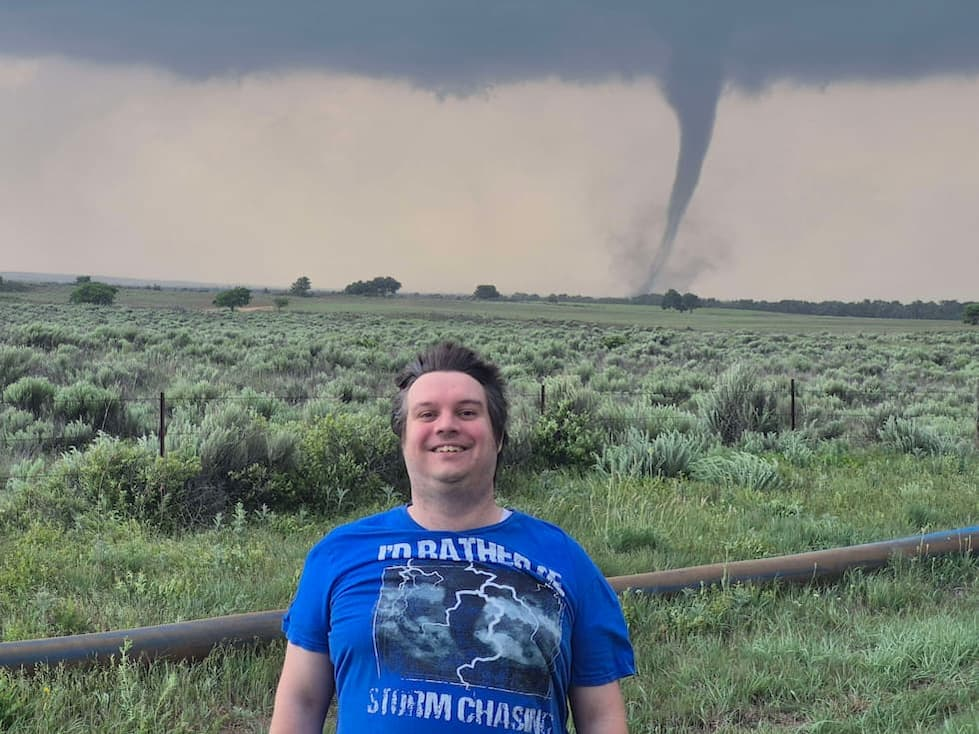

Jacob Gishwiller
About Me
Hello! My name is Jacob Gishwiller, I grew up in Nebraska but currently live in the state of Utah. I am currently working towards moving back to Nebraska. Having grown up in tornado alley I have found a lot of interest in weather and am currently studying it as a hobby and I am a storm chaser. I am studying software development through BYU Pathway and plan to eventually also study meteorology at UNL. I also love traveling and learning new things. I dream to be a full time storm chaser someday and to have a family of my own.
Nebraska, USA
Nebraska became the 37th state on March 1, 1867. It’s a landlocked state in the Midwest, bordered by South Dakota (north), Kansas (south), Wyoming and Colorado (west), and Missouri and Iowa (east). With just over two million residents, Nebraska is known for agriculture and cattle ranching. It lies in Tornado Alley and averages about 30–50 tornadoes per year. Fun facts: Nebraska is the birthplace of Kool-Aid, Omaha’s Henry Doorly Zoo is one of the highest-rated in the U.S., and landmarks include Chimney Rock and Carhenge. The Runza sandwich also traces its roots to Germanic settlers.